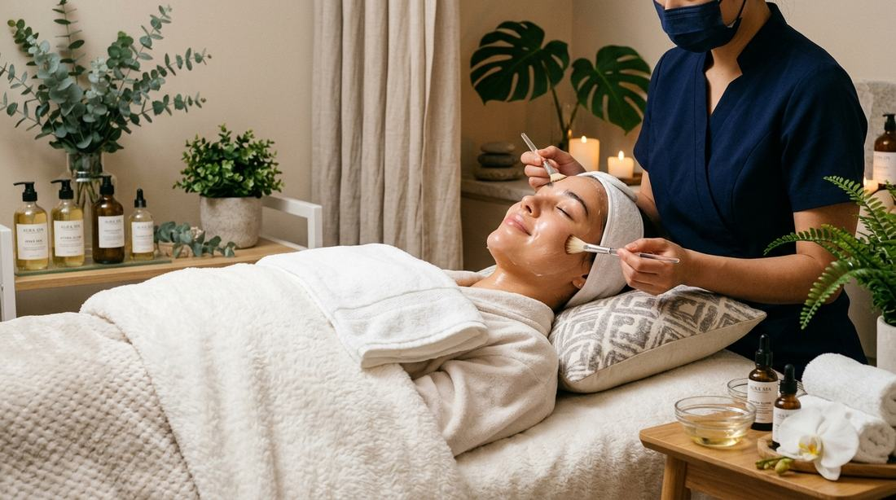

Facials · Bukit Panjang
Hydra facial or needle-free whitening: which one fits?

“I want brighter skin” is the sentence Evelyn hears most, and it points at two different jobs. Skin can look flat because it is dry, congested, or rough. It can also look uneven because of dark spots, melasma, sun spots, or marks left after acne. A Hydra facial and needle-free whitening are both offered at E-Perfect Beauty. They are not two marketing names for one machine.
This guide is how the studio separates them, so you can send a useful photo instead of booking the wrong hour. The price for either is still confirmed on WhatsApp after that look. Nothing on this page is a fee.
Choose a Hydra facial when the problem is texture and thirst
Hydra Aqua Peel, the Hydra glow booster, and the facial spa sit together on the facial menu. The Aqua Peel is described as deep cleansing and gentle exfoliation for clogged pores and uneven texture. The glow booster is the more hydration-heavy option, including before an event. A facial spa visit is paced to what the skin needs that day, not to a fixed script that ignores a compromised barrier.
Book this side of the menu if makeup sits patchy because the skin is dry, if blackheads and congestion are the actual complaint, or if you want a reset before a dinner and you do not have distinct dark patches to treat. The session should not leave you scoured. The facial trust notes say the same thing: cleansing without unnecessary aggression, and time enough that you are not rushed off the bed.
What you do the rest of the month still decides how long that comfort lasts. In Singapore’s humidity a heavy cream is often the wrong daily moisturiser, and a new acid every night will undo a calm facial. The shorter note on that routine is daily hydration habits: water, morning SPF, one new active at a time.
Choose needle-free whitening when the problem is pigment
Needle-free whitening is the treatment aimed at stubborn dark spots, uneven tone, melasma, sun spots, and acne marks, without injections. The dedicated page describes it as working on excess melanin and uneven dark-spot formation, and it is the page that lists the studio’s stated proof points. Read those figures there — needle-free whitening — rather than treating a facial menu line as the same claim.
It is not listed as a numbered price on the facial menu. It has its own page because it is a different goal. If your concern is a specific patch that stays after the rest of the face looks smooth, whitening is the conversation. If the whole face looks dull but you cannot point at a spot, start with the Hydra question instead.
Why one visit does not automatically include the other
A cleansing facial can make pigment look slightly quieter for a day because the surface is smoother and more hydrated. That is not the same as treating the spot. Whitening, in turn, is a poor substitute for clearing congestion. Doing the dramatic-sounding option first is how people spend a session on the wrong problem and then decide “facials do not work”.
Evelyn’s usual path is boring on purpose. She looks at a photo in daylight, asks what you have already put on the skin, and says which of the two is relevant — or that neither is, if the skin is irritated and needs to be left alone for a week. You can decline. Appointments exist so that decision is not made in a rush at the door.
What to send so the answer is specific
- A bare-faced photo by a window, no filter. Bathroom yellow light hides both dryness and spots.
- One close photo of the area you notice, and one of the full face so the spot can be compared with the rest.
- The two products you use most nights. If one of them is a peeling acid or a scrub, say how often.
- Whether you want the change for a date in the next week or you are willing to plan more than one visit. Event skin and pigment work are different calendars.
SPF still sits under both choices. Whitening and Hydra work are easy to waste if the face goes uncovered on a midday walk along Segar Road the same week. The studio will not invent a month-count for either treatment on this page. Skin that marks easily and skin that only needed water are not on the same schedule.
A simple way to decide before you message
- Rough, tight, congested, or “my makeup will not sit”: start with Hydra or a facial spa.
- A mark, a patch, melasma, or sun spots you can point at: start with needle-free whitening.
- Both texture and a separate dark patch: say both in the same message and let Evelyn sequence them. Do not book two names on the same afternoon to “save time”.
- The issue is brows or a pale lip, not the cheek: this guide is the wrong one. Use the brow visit guide or the lip embroidery guide.
Questions that decide the booking
Is a Hydra facial a whitening treatment?
No. Hydra Aqua Peel and the glow booster cleanse and hydrate dull or congested skin. Needle-free whitening is for dark spots, melasma, sun spots, and acne marks.
Can I book whitening if I only feel dull?
Send a photo first. Dullness from dehydration is usually a facial conversation. Whitening is for pigment you can see as spots or uneven patches.
Are the prices on this page?
No. Facial lines and whitening are quoted on WhatsApp after Evelyn knows which one suits you. You can decide not to book.
Do I need an appointment?
Yes. The studio at 550B Segar Rd works by appointment so the visit is not rushed.
More from the journal: